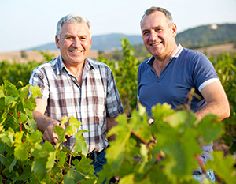

Vingården
Dyk ned i historien bag Havblink Hvidvin og vores bæredygtige produktion eller kom til vinsmagning.
Om os
Velkommen til Havblink Hvidvin, hvor vi forener passion for bæredygtig vinproduktion med stolthed over vores sydfynske rødder.
Hos Havblink Hvidvin dyrker vi vores druer med omtanke og omhu på vores unikke vinmarker, der nyder godt af den friske havluft og det milde klima på Sydfyn. Vores vision er at skabe hvidvine af højeste kvalitet, der kan måle sig med anerkendte internationale mærker – alt sammen med respekt for miljøet.
Vi tror på, at bæredygtighed og kvalitet går hånd i hånd. Derfor anvender vi innovative dyrkningsmetoder og fokuserer på at minimere vores CO2-aftryk, samtidig med at vi plejer vores vinstokke som en kunstform. Hver flaske, der forlader vores vingård, fortæller historien om solmodne druer, omsorgsfuld produktion og en dyb respekt for naturen.
Men Havblink Hvidvin er mere end blot vin. Det er en oplevelse – en smag af vores lokale terroir, et blik ud over de bølgende marker, og en invitation til at udforske dansk hvidvins unikke potentiale.
Vi glæder os til at byde dig velkommen i vores verden af dansk hvidvin.
Vores historie
Havblink Hvidvin er ikke blot en vingård – det er en historie om passion, dedikation og ambition. På de sydvendte skråninger af Sydfyn opstod idéen om at skabe hvidvine, der kunne måle sig med internationale mærker, men samtidig forblev tro mod den danske jord og dens unikke klima.

Historien begyndte med en vision om at skabe noget unikt. Ejerne, der fra starten var drevet af en kærlighed til naturen og bæredygtig produktion, valgte Sydfyn som deres base. Denne placering, med dens milde klima og nærhed til havet, viste sig at være ideel til dyrkning af druer, især den robuste og alsidige Solaris.
Fra de første vinstokke blev plantet, var målet klart: At dyrke vin med respekt for miljøet, uden brug af skadelige sprøjtemidler og med fokus på økologiske principper. Det krævede ikke blot hårdt arbejde, men også en konstant læringsproces – fra at forstå jordbundens særlige egenskaber til at mestre den komplekse proces med vinfremstilling.
Med tiden blev Havblink kendt for sine friske, aromatiske hvidvine, der balancerede mellem syre og frugtighed. Gennem eksperimenter og innovation har vingården udviklet flere forskellige udtryk af Solaris-druen – fra knivskarpe, tørre hvidvine til fadlagrede varianter med dybere kompleksitet.
Havblink Hvidvin er i dag ikke blot et navn, men en garanti for kvalitet. Med internationale priser og anerkendelse fra vinentusiaster har vingården bevist, at dansk hvidvin kan være noget ganske særligt. Men for ejerne er den største tilfredsstillelse stadig at se glæden i folks øjne, når de smager en vin, der ikke bare er produceret med omhu, men også med stolthed. Gennem årene er Havblink fortsat med at udvikle sig, altid med fokus på bæredygtighed og høj kvalitet. Det er en fortælling om at turde drømme stort – og om at lade passionen for vin vokse på skråningerne af Sydfyn.
Vores vision
Hos Havblink stræber vi efter at sætte nye standarder for dansk vin. Vores arbejde drives af tre centrale værdier, der former alt, hvad vi gør – fra vinmark til flaske:
Bæredygtighed
Vi dyrker med omtanke og respekt for naturen. Vores vinmarker plejes med minimal påvirkning og uden unødig kemi – altid med jordens fremtid for øje.
Kvalitet
Hver flaske vin skal være en oplevelse. Vi arbejder kompromisløst med Solaris-druen for at udtrykke det bedste fra det danske terroir – med rene, elegante og karakterfulde vine som resultat.
Innovation
Vi går nysgerrigt til vinens verden og tør tænke nyt. Med nordisk mod og moderne metoder udforsker vi, hvordan dansk vin kan smage i morgen.
Vinsmagning
Oplev smagen af Sydfyns natur med en unik vinsmagning hos Havblink Hvidvin.
Træd ind i vinmarkernes verden, hvor solens stråler kysser druerne, og havbrisen giver vinstokkene deres særlige karakter. Vores smukke vingård på Sydfyn byder på en autentisk oplevelse, hvor du kan smage vores prisvindende hvidvine direkte fra kilden.
Under vinsmagningen får du mulighed for at smage flere af vores håndlavede hvidvine, høre historien om Havblink Hvidvin og lære om vores bæredygtige produktionsmetoder. Vores passionerede værter guider dig igennem vinens rejse fra drue til flaske.
Uanset om du er vinelsker, nysgerrig på dansk vinproduktion eller bare ønsker en hyggelig oplevelse med venner eller familie, er vores vinsmagning en oplevelse, du ikke må gå glip af.
Book din vinsmagning nu og lad os byde dig velkommen til en dag fyldt med smag, hygge og historie.